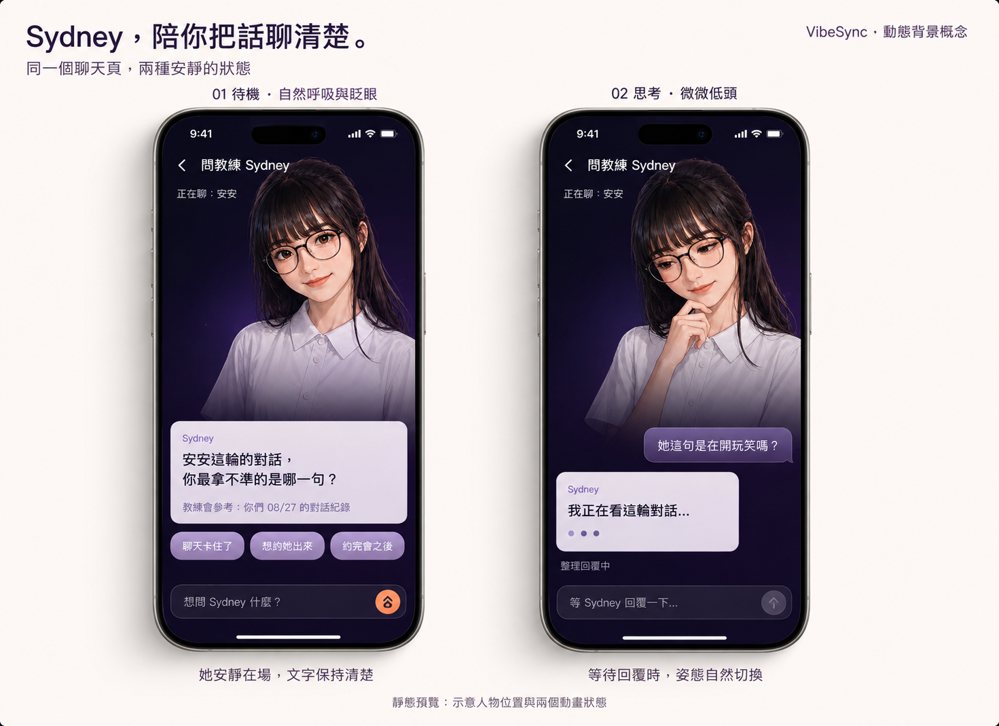

VIBESYNC · SHOW-ME · 發想交接
Sydney 在場，
陪你把話聊清楚。
點進「問教練 Sydney」之後，人物成為聊天頁的背景。用很輕的姿態變化，讓閱讀與等待多一點教練陪伴感。
01 / IDLE
她安靜在場
可試自然呼吸、偶爾眨眼，鏡頭穩定。
幅度與節奏交給 Bruce。

02 / THINKING
她正在整理回覆
可試微微低頭、手靠下巴。
是否需要另一個姿勢，也由 Bruce 判斷。
兩個畫面取自同一張原始預覽板，這裡只用版面裁切展示，沒有重製圖像。打開完整原圖。圖中文字、間距與輸入狀態都是示意，不是定稿，也不是已完成的動畫。
{kind=link}
請 BRUCE 優先思考的 UX 問題
長篇分析回來後，空間要交給誰？
現在把對話窗往下放，上方原本有預留空間。預覽只有短句；真的送出後，一大段高價值分析需要足夠的閱讀空間。這是本方向還沒解決的核心問題。
送出前：Sydney／預留空間
開場短句
輸入列
收到長文：Sydney 要縮小、淡出，還是退到背景？
長篇分析需要主要閱讀區
段落、重點、回看前文、繼續追問
段落、重點、回看前文、繼續追問
鍵盤出現時，閱讀區還剩多少？
右邊是待裁決的空間示意，並非定稿。請把完整長回答、捲動回看與鍵盤狀態一起想；人物如何退讓、是否調整整個版面，都由 Bruce 決定。
如果往下試，可以先感受這個節奏
待機使用者讀內容、想問題
等待回覆跟隨既有請求中的狀態
回到安靜回覆完成或發生錯誤
這是可選的兩狀態起點。也可以只留一個安靜循環，或最後採用靜態人物。
我的視覺偏好
臉清楚、身體下緣融進背景，前景文字有穩定的閱讀底色。人物動作小，讓她看起來是在聽。
想像使用者正在打字或讀長回答時，Sydney 能自然退到背景；這個存在感的分寸，由 Bruce 拿捏。
可選的畫面分層
既有深色背景
Sydney 人物與下緣淡化
前景對話、來源說明與進度
固定底部輸入列
從背景到前景；只示意責任分層，並非要求使用特定 widget。
給 Bruce 的可選實作線索
GlobalCoachScreen → CoachSurface是現有教練頁組合，可從局部人物背景試構圖。共用品牌背景目前採靜態設計。- 思考姿態可觀察既有
isLoading；成功與錯誤都能結束等待姿態。來源、對話範圍與額度流程維持現有責任。 HomeCoachPresence已有各姿勢尺寸對齊、淡入淡出與遮罩經驗可參考；靜態 PNG 的交叉淡入淡出不等於眨眼或呼吸素材。motionDisabled(context)已處理減少動態與TickerMode。若試作，可留意鍵盤出現、長對話、頁面離開與減少動態時的閱讀及播放狀態。- 動畫要採影片、序列圖或其他做法，由 Bruce 依人物質感、循環接點、透明邊緣、檔案大小與實機表現選擇；本單不指定套件或格式。